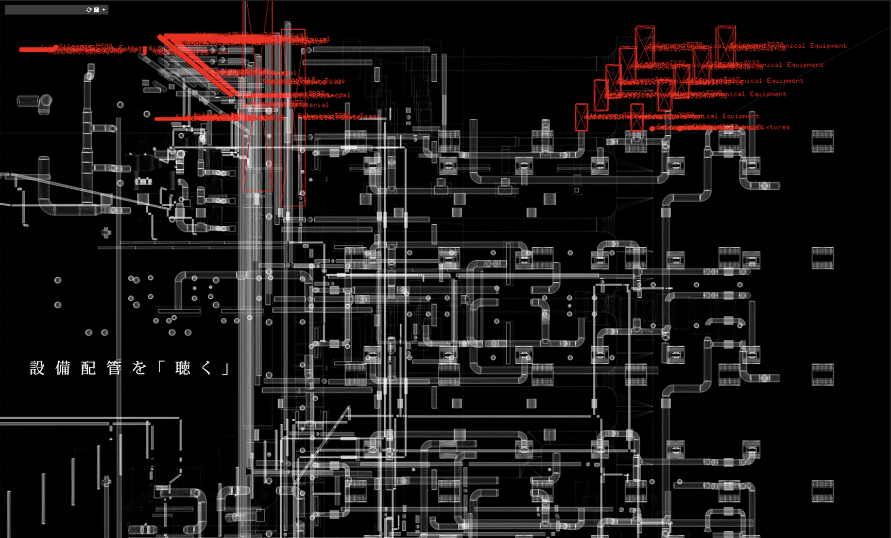

建築の解剖 / Architecture Anatomy
建物を建設する際に作られるBIMデータは設備配管や構造など建物を裏で支える部材が集積されており、 普段建物を利用する一般の人々にとってブラックボックス化した側面に注目を与える可能性を秘めているのではないだろうか。
そこで、BIMデータをインタラクティブアート製作に用いられる拡張性の高い開発環境に接続することで、多くの人が建築の様々な側面を 鑑賞することができるようにすることを目指す。